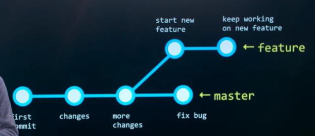

Git
Branching
You can make a branch when working on a new feature to prevent the linearity of commits.
The initial branch is called master.
Diagram of a repository with branches:

Where you are in the repository currently is known as the
head.
You can also merge branches.
You can branch when you want to try something but don’t want to mess up your master branch.
Some useful branching commands:
- branch - get a list of branches in current repository
- branch <name> - create a branch
- git checkout <branch name> - switch to a branch
- git merge <branch name> - take commits from a branch and merge them into the current branch.
- git push --set-upstream origin <branch name> - do this while on the new branch you made on your local computer. This will push the new branch to github.
Remotes
origin - the original remote on GitHub
A remote is a location of a repository that may be the same or different from yours. It can be at a different place on the commit timescale and/or have different branches. For example, a remote could be GitHub.
git fetch - takes commits from origin (a version of GitHub)
However, your master will still be the latest commit you add. When you fetch it adds all the latest commits from the remote origin. Then you will have to fast forward your master to the latest commit:
git merge origin/master - moves your master to the remote origin’s master.
these can be combined with:
git pull - basically used when a remote is different than your local. It will get all the latest commits and move your master to the latest.
Forks
Make a copy of a repository. Now you can do whatever you want with the fork.
Pull Request
When you like your fork changes and want them to be merged back into the original repo, you will submit a pull request to the original repo. It is a good way of getting feedback and getting your changes reviewed.
HTML
<a href=”link”> click here </a>
href is the hyperlink to link to when someone clicks. The link can also link to ids. For example:
<a href=”git10”> This has an href to the Git section's id </a>
This has an href to the Git section's id
html5 has new elements that allow us to easily create a common part of a webpage. In previous version of HTML you would have to make divs with class names.